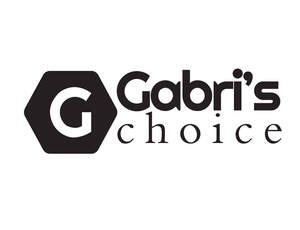

Trade Mark Journal No.2025/028 11 July 2025
UK00004229251 4 July 2025 (3,5,8,11,21,24)

- Class 3
- Hair shampoo; Hair shampoos; Hair relaxers; Hair dye; Hair pomades; Hair texturizers; Hair conditioner; Hair mousse; Hair lighteners; Dyes for the hair; Hair dyes; Hair mascara; Hair bleaches; Hair bleach; Hair colourants; Hair serums; Hair lotion; Hair lotions; Hair cosmetics; Hair moisturizers; Hair gel; Hair rinses; Hair mousses; Hair color; Hair conditioners; Hair styling lotions; Hair wax; Hair sprays; Hair colouring; Hair moisturisers; Hair oils; Hair spray; Shampoos for human hair; Hair styling gel; Hair creams; Hair cream; Hair colorants; Hair gels; Hair nourishers; Hair emollients; Hair powder; Styling sprays for the hair; Baby hair conditioner; Hair oil; Hair chalks; Hair tonics; Tints for the hair; Hair styling waxes; Hair masks; Hair lacquer; Hair lacquers; Hair balsam; Hair styling spray; Hair balm; Hair styling gels; Styling gels for the hair; Hair balms; Colouring lotions for the hair; Hair tonic; Hair liquid; Styling paste for hair; Hair glaze; Non-medicated hair shampoos; Hair and body wash; Hair rinses [for cosmetic use]; Hair glazes; Cosmetic preparations for the hair and scalp; Hair liquids; Wax treatments for the hair; Shampoo; Dandruff shampoo; Shampoos; Waterless shampoo; Baby shampoo; Baby shampoo mousse; Shampoo bars; Dry shampoos; Shampoo for animals; Waterless shampoos; Non-medicated shampoos; Hair moisturising conditioners; Hair conditioner bars; Hair rinses [shampoo-conditioners]; Non-medicated hair lotions; Mousses [toiletries] for use in styling the hair; Cosmetic hair lotions; Non-medicated balm for hair; Oils for hair conditioning; Shaving lotion; Hair care lotions; Shaving soap; Conditioners for treating the hair; Hair tonic [for cosmetic use]; Shaving lotions; Hair care lotions [for cosmetic use]; Dandruff shampoos, not for medical purposes; Conditioners in the form of sprays for the scalp; Gels for fixing hair; Depilatory lotions; Conditioners for use on the hair; Conditioning balsam; Conditioning creams; Conditioning preparations for the hair; Cleaner for cosmetic brushes; Hair permanent wave kit; Hair permanent treatments; Hair neutralizers; Hair protection mousse; Hair colour removers; Colour removers for the hair; Hair protection gels; Hair colouring and dyes; Preparations for permanent hair waves; Hair color removers; Hair straightening preparations; Mousses being hair styling aids; Eyelash dye; Hair frosts; Hair care serum; Hair care serums; Hairstyling serums; Moisturizing milk; Hydrogen peroxide for use on the hair; Hydrogen peroxide for cosmetic purposes; Bleach; Bleaches for use on the hair; Hair bleaching preparations; Bleaching preparations for the hair; Shaving cream; Shaving gel; Shaving creams; Shaving mousse; Shaving balms; Shaving foam; Foam for use in shaving; Shaving oils; Shaving foams; Shaving oil; Shaving preparations; Shave creams; Hair removal and shaving preparations; Preparations for use after shaving; Preparations for use before shaving; Hair removing cream; Hair grooming preparations; Pre-shave gels; Epilating waxes; Pre-shave foams; Wax (Depilatory -); Depilatory wax; Depilatory creams; After-shave gel; After-shave creams; Facial lotion; Depilatories; Depilatory waxes; Pre-shave preparations; Creams for fixing hair; Facial cream [for cosmetic use]; Make-up removing creams; Wax strips for removing body hair; After-shave; Cosmetic hair dressing preparations; Aftershave lotions; Non-medicated scalp treatment cream; Facial lotions; Parquet floor wax; Agents for removing wax; Massage waxes; Depilatory sugar paste; Paper hand towels impregnated with cosmetics; Moist paper hand towels impregnated with a cosmetic lotion; Paper hand towels impregnated with cleaning agents; Massage oil; Cuticle oil; Cleansing oil; Facial oil; Depilatory preparations; Pre-shave creams; After-shave lotions; Shaving sprays; Shaving balm; Shaving soaps; Aftershave creams; Facial creams [cosmetics]; Cosmetic creams and lotions; Anti-wrinkle creams [for cosmetic use]; Shaving gels; Hair care creams [for cosmetic use]; Cosmetic massage creams; Foams for use in shaving; Anti-wrinkle cream [for cosmetic use]; Facial creams [cosmetic]; Cosmetic creams for the skin; Skin creams [cosmetic]; Skin creams [for cosmetic use]; Facial creams [for cosmetic use]; Moisturising skin creams [cosmetic]; Anti-aging creams [for cosmetic use]; Cosmetic creams; Moisturising skin lotions [cosmetic]; Cleansing creams [cosmetic]; Cosmetic facial lotions; Anti-wrinkle creams; Body and facial creams [cosmetics]; After-shave emulsions; Skin cleansing cream [non-medicated]; Shave balm; Cosmetic hair regrowth inhibiting preparations; Exfoliating creams; Non-medicated skin creams; Skin creams [non-medicated]; Hair tonics [for cosmetic use]; Nail polish; Nail varnish; Varnish (Nail -); Nail glitter; Nail gel; Nail varnishes; Nail enamel; Nail strengtheners; Nail hardeners; Nail makeup; Nail enamels; Nail polish removers; Nail cosmetics; Nail polish remover; Nail tips; Nail polish pens; Nail whiteners; Nail cream; Nail enamel remover; Nail varnish removers; Nail enamel removers; Gel nail removers; Nail polish remover pens; Nail conditioners; Nail polish removers [cosmetics]; Nail paint [cosmetics]; Nail hardeners [cosmetics]; Nail polish top coat; Nail polish base coat; Nail primer [cosmetics]; Nail varnish remover [cosmetics]; Nail tips [cosmetics]; Nail art stickers; Nail decolorants; Nail polishing powder; Nail buffing preparations; Nail base coat [cosmetics]; Nail varnish removing preparations; Nail varnish for cosmetic purposes; Nail care preparations; Cosmetic nail preparations; Nail repair preparations; Skin, eye and nail care preparations; Powder for forming sculpted finger nail tips; Dressings for nail reconstruction; Cosmetic nail care preparations; Cosmetic preparations for nail drying; Glue for strengthening nails; False nails; Nails (False -); Artificial nails; Fingernail decals; Polish; Lotions for strengthening the nails; Adhesives for false eyelashes, hair and nails; Adhesives for fixing false nails; Adhesives for artificial nails; Preparations for removing gel nails; Fingernail tips; Cuticle removers; Nail-polish removers; Polishes; Make up removing preparations; Eye make up remover; Stain removers; Stain removing preparations.
- Class 5
- Dental wax for the preparation of dental moulds.
- Class 8
- Hair clippers; Nail clippers; Fingernail clippers; Non-electric hair clippers; Hand-operated hair clippers; Electric hair clippers; Manual clippers; Hair clippers for personal use, electric and non-electric; Electric nasal hair trimmers; Nail scissors; Hair cutting scissors; Scissors; Hairdressing scissors; Scissor blades; Electric razors; Nail files, non-electric; Electric hair straighteners; Electric hair straightening irons; Hair straightening irons; Electric hair curling irons; Electric hair crimpers; Electric crimping irons for the hair; Electric irons for styling hair; Non-electric curling irons; Electric hair crimper; Electric hand-held hair styling irons; Electric hair trimmers; Electric hair cutters; Electric hair braiders; Hair braiders, electric; Hair styling appliances; Electric and battery-powered hair clippers; Hair clippers for babies; Curling tongs; Non-electric flat irons; Crimping irons; Shaving blades; Shaving cases; Razors; Razor blades; Vibrating blade razors; Vibrating blade shavers; Straight razors; Disposable razors; Hair cutting and removal implements; Electrolysis apparatus [depilatory]; Depilation appliances; Hair-removing tweezers; Electric and non-electric depilatory appliances; Depilation appliances, electric and non-electric; Cuticle scissors; Tweezers; Nail nippers; Nail buffers for use in manicure; Nail punches; Nail files; Nail buffers; Nail extractors; Extractors (Nail -); Nail polishers (Electric -); Nail skin treatment trimmers; Nail files, electric; Electric nail files; Nail polishers (Non-electric -); Electric nail buffers; Nail nippers [hand tools]; Nail pullers, hand-operated; Roller head refills for electronic nail files; Roller heads for electronic nail files; Cuticle tweezers; Manicure and pedicure tools; Nail buffers, electric or non-electric; Cuticle nippers.
- Class 11
- Towel steamers for hair salons; Hair steamers for beauty salon use; Hair steamers for use in beauty salons; Hair driers [dryers]; Dryers (Hair -); Hair dryers; Driers (Hair -); Hair driers; Electrical hair driers; Electric hair dryers; Travel hair dryers; Stationary hair dryers; Hand-held electric hair dryers; Hair driers for use in beauty salons; Hairdryers; Appliances for drying hair; Hair drying appliances; Holders adapted for hair dryers; Hair dryers [for household purposes]; Hair drying machines for beauty salon use; Depilatory wax heaters; Hand held hair dryers; Apparatus for drying the hair; Hair drying apparatus; Apparatus for drying hair; Fans for hair drying; Infrared lamps for drying the hair; Towel steamers; Electric towel warmers; Nail lamps; LED nail drying apparatus.
- Class 21
- Combs; Hair combs; Combs for the hair (Large-toothed -); Large-toothed combs for the hair; Comb (electric); Combs for back-combing hair; Wide tooth combs for hair; Eyelash combs; Electric hair combs; Combs (Electric -); Electric combs; Hair brushes; Shampoo brushes; Shaving brushes; Eyelash brushes; Hair color application brushes; Eyebrow brushes; Brushes; Brush holders; Shaving brush holders; Shaving brush stands; Brushes (except paint brushes); Eyeliner brushes; Mascara brushes; Brush goods; Nail brushes; Hair for brushes; Lip brushes; Exfoliating brushes; Make-up brushes; Brushes, except paintbrushes; Skin cleansing brushes; Hair tinting brushes; Cosmetics brushes; Cosmetic brushes; Shaving bowls; Shaving dishes; Shaving stands; Holders for shaving brushes; Stands for shaving brushes; Stands for shaving utensils; Cosmetic spatulas for use with depilatory preparations; Facial cleansing brushes, electric and non-electric; Holders for towels; Towel racks; Towel holders; Towel rails.
- Class 24
- Textile hair drying towels; Turban towels for drying hair; Towels; Bathroom towels; Terry towels; Towels of textiles; Hand towels; Hooded towels; Turkish towels; Towels of textile; Towels [textile]; Towels [of textile]; Face towels; Children's towels; Turkish towel; Face cloths of towelling; Towels made of textile materials; Face towels [made of textile materials]; Make-up removal towels [textile] other than impregnated with toilet preparations; Cloths.
Nevzat Ozmeral